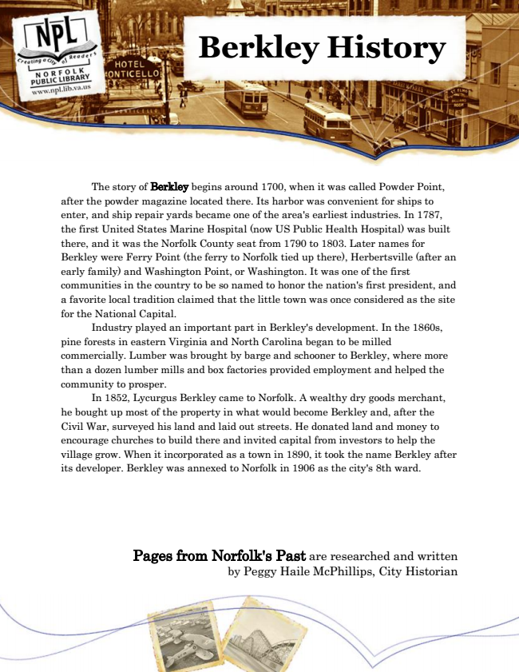

Berkley History
The story of Berkley begins around 1700, when it was called Powder Point, after the powder magazine located there. Its harbor was convenient for ships to enter, and ship repair yards became one of the area's earliest industries. In 1787, the first United States Marine Hospital (now US Public Health Hospital) was built there, and it was the Norfolk County seat from 1790 to 1803. Later names for Berkley were Ferry Point (the ferry to Norfolk tied up there), Herbertsville (after an early family) and Washington Point, or Washington. It was one of the first communities in the country to be so named to honor the nation's first president, and a favorite local tradition claimed that the little town was once considered as the site for the National Capital.
Industry played an important part in Berkley's development. In the 1860s, pine forests in eastern Virginia and North Carolina began to be milled commercially. Lumber was brought by barge and schooner to Berkley, where more than a dozen lumber mills and box factories provided employment and helped the community to prosper.
In 1852, Lycurgus Berkley came to Norfolk. A wealthy dry goods merchant, he bought up most of the property in what would become Berkley and, after the Civil War, surveyed his land and laid out streets. He donated land and money to encourage churches to build there and invited capital from investors to help the village grow. When it incorporated as a town in 1890, it took the name Berkley after its developer. Berkley was annexed to Norfolk in 1906 as the city's 8th ward.
Pages from Norfolk's Past are researched and written by Peggy Haile McPhillips, City Historian